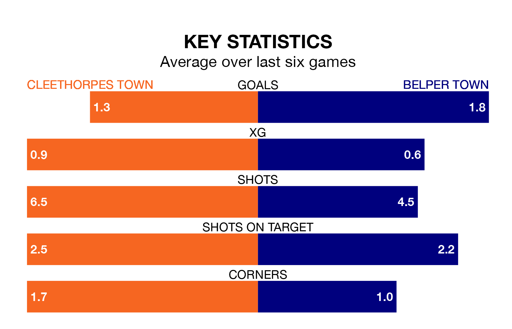

Belper Town face a challenge to maintain their high-scoring form away against a tight Cleethorpes Town defence on Wednesday.
With 46 goals in 22 games, Belper are the second-highest scorers in the Northern Premier League Division One East ahead of the 7.45pm kick-off at the Bradley Community Stadium.
They face a Cleethorpes side who have scored 29 in 20 matches, but conceded only 22 goals, putting them third among the league's tightest defences – only Stockton Town FC and Dunston UTS have conceded fewer goals.
Belper are third in the table after 22 games, of which they have won 12 and drawn three, earning 39 points.
Cleethorpes are eight places behind Belper Town in 11th, with seven wins and seven draws putting them on 28 points.
Cleethorpes Town are in mixed form in the Northern Premier League Division One East, with two wins and three draws from their last six games.
With three wins and two draws over that period, the away team's form is slightly better – they have taken 11 points from 18, compared to the hosts' nine.
Cleethorpes's last match was on Saturday, a 2-1 win against Sheffield FC.
Belper beat North Ferriby 2-1 last time out, also on Saturday.
Updated: 14:53 (UTC), 16/01/24